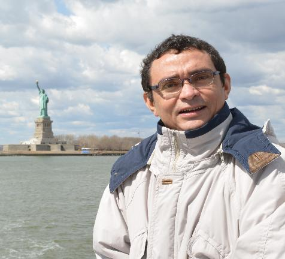

Professor Romildo José da Silva
Departamento de Matemática
Centro de Ciências
Universidade Federal do Ceará
Sou o coordenador da OCM desde 2018. Em 2023, a OCM será realizada no dia 3 de junho de 2023, das 13h00 às 17h00, em local a ser definido e divulgado.
A página antiga está ativa porque nem todas as informações migraram para a nova página. Entretanto, a inscrição para OCM estará disponível somente na nova página, como ocorreu em 2019, 2021 e 2022. Não houve a edição de 2020 da OCM por conta da Pandemia de Coronavírus.
Em fevereiro de 2023 assumi a coordenação local da OBM, responsável pela aplicação das provas em Fortaleza.
CB0534 - Cálculo Diferencial e Integral II - Turma 01 - Bacharelado em Matemática
CB0534 - Cálculo Diferencial e Integral II - Turma 05 - Ciência da Computação
CB0534 - Cálculo Diferencial e Integral I - Turma 01 - Bacharelado em Matemática
CB0534 - Cálculo Diferencial e Integral I - Turma 05 - Ciência da Computação
CB0535 - Cálculo Diferencial e Integral II - Turma 02 - Bacharelado em Matemática
CB0535 - Cálculo Diferencial e Integral II - Turma 04 - Ciência da Computação
CB0534 - Cálculo Diferencial e Integral I - Turma 04 - Bacharelado em Física
CB0534 - Cálculo Diferencial e Integral I - Turma 08 - Ciência da Computação
CB0535 - Cálculo Diferencial e Integral II - Turma 04 - Bacharelado em Física
CB0535 - Cálculo Diferencial e Integral II - Turma 03 - Ciência da Computação
CB0534 - Cálculo Diferencial e Integral I - Turma 05 - Bacharelado em Matemática
CB0534 - Cálculo Diferencial e Integral I - Turma 09 - Ciência da Computação
CB0591 - Séries de Funções e Equações Diferenciais Ordinárias - Turma 1
YouTube - Disciplinas Ministradas em Semestres Anteriores
Nova Página do Departamento de Matemática
Antiga Página do Departamento de Matemática
rjs@mat.ufc.br
rjs@ufc.br
ocm@mat.ufc.br - email para assuntos relativos à OCM
obm@mat.ufc.br - email para assuntos relativos à OBM-Ceará
WhatsApp: 55 85 98201-6979
Meu Canal no YouTube: @rjsdusk